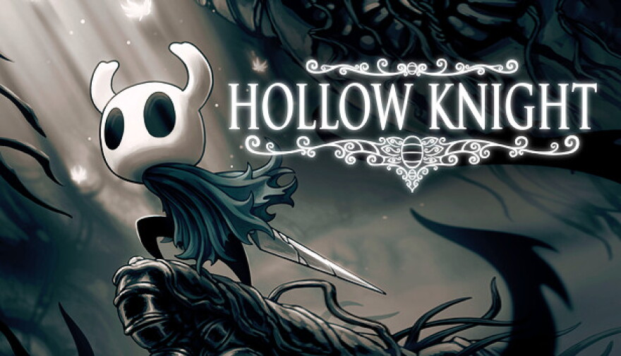
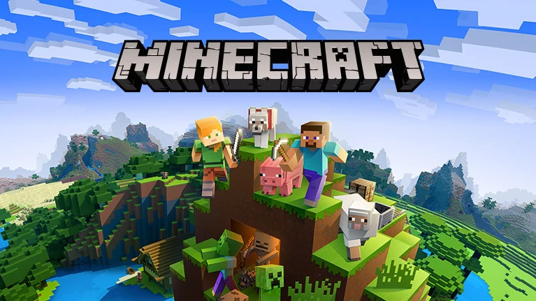

Got any other questions?
You can find me on LinkedIn here.
The philosophy of this simple climbing game is likely to never truly leave me. Armed with three movement options, your goal as Madeline, the main character, is to scale Celeste mountain. This story of trial, tribulation, mental health, friendship, and self-acceptance taught me a lot about myself and how to keep pushing, even when the going gets rough.

A source of inspiration and many friendships to me for years at this point. I love the art and sound in this game, as well as the challenges it has to offer. It’s very difficult in its gameplay and in the understanding of its story; this game is full of mysteries upon mysteries.

The entire reason I started coding; I picked up the game at around 6 years old and haven’t been able to put it down since. I started programming with the in-game “command” system, then branched out from there. I love talking about this game so much that I’ve literally written an essay about my experience with it.
Video games are such a unique experience. They’re like a movie where you’re the main character; they’re the most technologically advanced puzzles to play; they’re so easy to mess up, but when they’re good, it’s a fantastic experience. I really love video games; it’s why I want to pursue computer engineering in the first place. If I never played games that made me fall in love with the medium, such as the ones in the other column, I probably would’ve never picked up coding at all! I spend a lot of time on games in a variety of genres, but I picked a few that are very near and dear to me to share here.
I’ve been drawing since the second grade. Any of my teachers can tell you that it’s almost impossible for me to hand in an assignment with no doodles in the margins. It’s given me a real passion for visual design; in fact, I decided on my layout for this website largely based on sketches I had made for it!
I play piano and drums in a jazz ensemble at my school. Shoutout to Justin, who dealt with my rough starting phase for drumming in early 2025, when I had just picked up the instrument. I also play the begena, which is sort of like a harp, but it’s significantly older and from Ethiopia instead.
I’ve been reading for fun since I was a little younger than three years old, and it’s grown to a lifelong passion. I love getting book recommendations and getting immersed in long stories. My favorite genres are dystopian and historical fiction, though a little romcom never hurts.